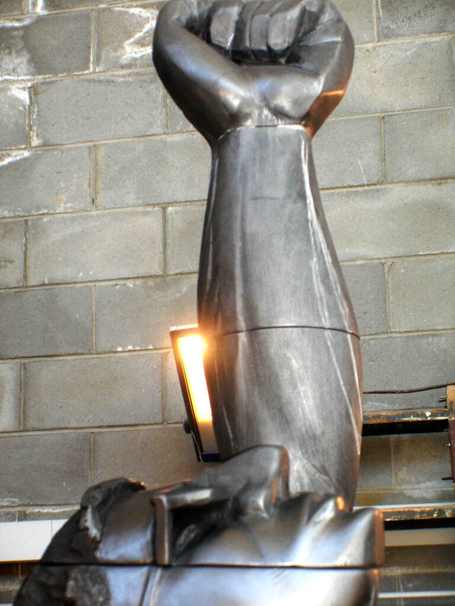

David Mirás
 ● Vídeo en bucle
● Vídeo en bucle
Pintura, escultura, dibujo digital y performance desde Barcelona.
En
movimiento
Cada retrato digital nace con el dedo sobre la pantalla del móvil. Aquí se ve trazo a trazo.


Obra
Pasa el cursor por cada pieza para verla en su color real.



Escultura · homenaje al pintor Ocaña
Ocaña en tránsito
Talla directa sobre grafito de alta densidad, pulido y bruñido con pincel en bronce.
320 cm
600 kg
Exposiciones
- yo · tú · nosotros · ellas Inusual Project, Barcelona · Colectiva
- Mutabilidad Sala Freedonia, Barcelona · Performance
- Testimoni del conflicte Poble Vell, Corbera d’Ebre · Colectiva
- Miras al otro lado Barcelona · Taller propio
Hable
mos
Encargos, compra de obra, talleres en Miras al otro lado y colaboraciones con salas.
© 2026 David Mirás · Barcelona · Instagram [@USUARIO]Aviso legal · Privacidad